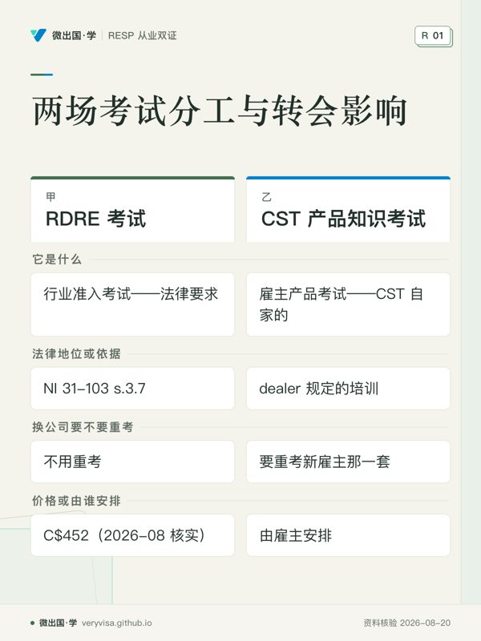
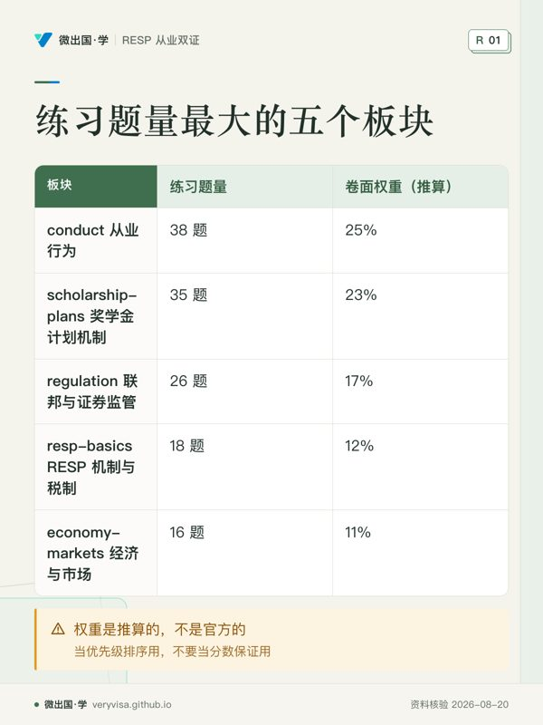
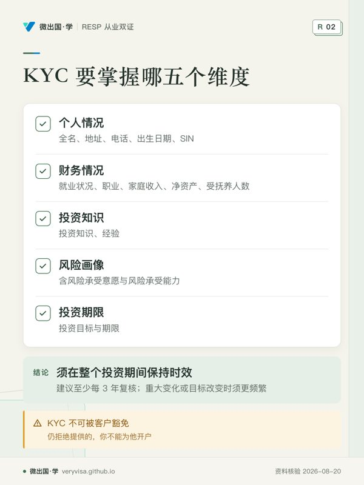
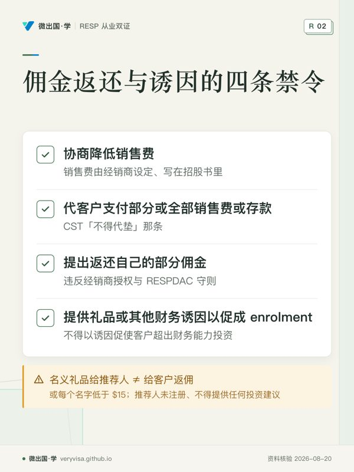
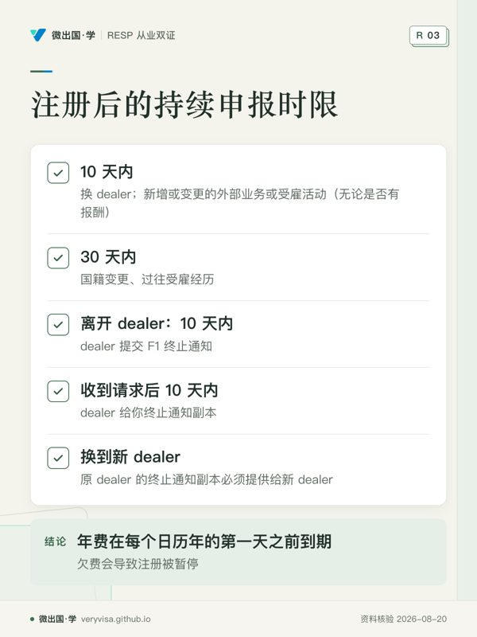
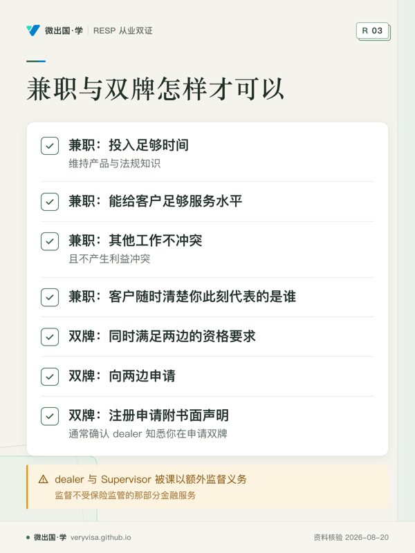
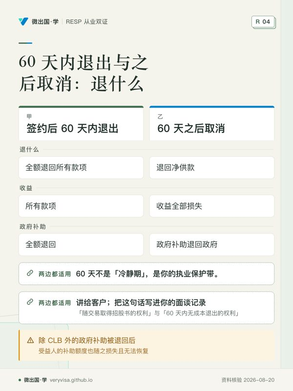
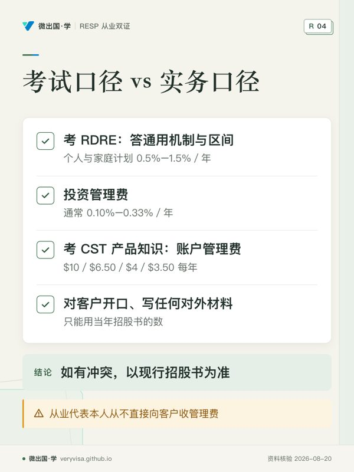
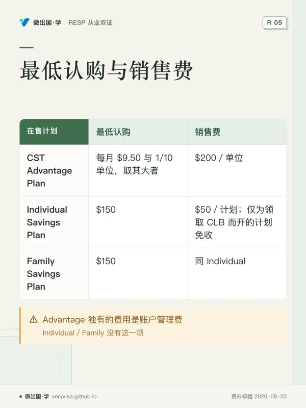
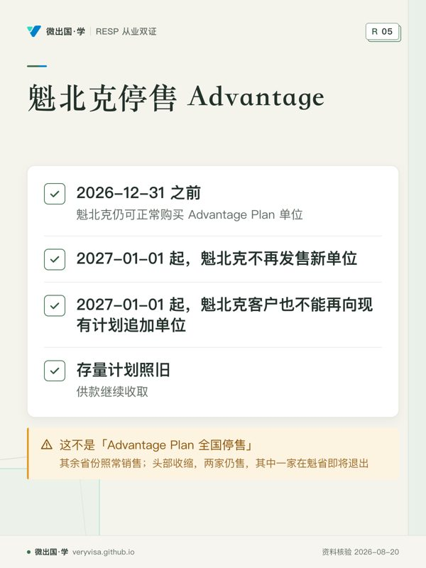

微出国 · 学
路线 › 知识卡
知识卡：不看正文也能拿到核心内容
全站 10 张知识卡，按页面分组。一张卡只画正文里的一段——一个判断、一条算法、一份清单；卡上每个字都能在对应页面的正文里找到（资料核验 2026-08-20）。
路线（首页）
- 先看先比较两栏解决的责任边界，再看任职变化后哪一项会跟着变化。
- 易漏两套课程入口不同，CST 另列 3 套 Practice Exam；别把练习形式当成同一标准。
- 下一步去练习，区分通用资格要求和雇主内部考核。

- 先看先按行序看投入优先级，而不是把最高项当成得分承诺。
- 易漏卷面上完全可能有某一章题目偏多，低位板块也不能直接跳过。
- 下一步去练习，先攻高位，再用错题决定补哪一块。
从业行为红线：KYC 与佣金禁令

- 先看先看第四项：主观意愿和客观能力都要纳入，不能只问其一。
- 易漏法定改名要合法证明文件；纯打字错误无需额外文件但仍须书面请求。
- 下一步去练习，用开户情境检查是否漏问关键信息。

- 先看先把四种动作按「改价、代垫、返现、送利益」分开判断。
- 易漏一句分佣话术会同时触及经销商授权、RESPDAC 守则与 CST 的代垫边界。
- 下一步去练习，把客户侧诱因和推荐安排放进情境题里辨别。
监管地图：注册之后的两条时钟

- 先看先按事件找期限；不同动作由不同主体完成，不能只背一个天数。
- 易漏终止通知还会写离职原因，以及未了结的客户、内部或监管问题。
- 下一步去练习，用离职、转会、资料变化三类情境判断责任方。

- 先看先分两组：前四项证明服务安排可行，后三项处理跨体系资格与申请。
- 易漏兼职是否可行还取决于当地监管机构立场与 dealer 政策，并非各地相同。
- 下一步去练习，分别验证服务安排与双边申请有没有缺项。
披露与费用：60 天和三层口径

- 先看先对照两列同一行，别把「全额」与「净供款」当成同一口径。
- 易漏图外还有 withdrawal fee、depository fee，已缴保险费也归于损失。
- 下一步去讲解核对当年招股书；再把面谈记录带给从业代表。

- 先看先按使用场景分层，不要把考试作答和客户沟通混成一套数字。
- 易漏旧题来源和当年披露可能不同；对外使用前回到现行招股书复核。
- 下一步去练习把题目按场景归类，再把实际客户数字交给持牌专业人士核对。
CST 产品线：三个在售计划与魁北克新规

- 先看先从第一行看门槛与收费，再顺着两列往下比。
- 易漏Family 可在受益人之间调配收益与补助，这是表外最关键的选择差异。
- 下一步去讲义核对受益人资格，再把家庭结构带给持牌专业人士。

- 先看先把日期当分界，再区分新买与追加两个动作。
- 易漏这条变化考试口径完全没有，实务判断应回到招股书。
- 下一步去知识卡把地区和时点写成判断条件，个案再找持牌专业人士。